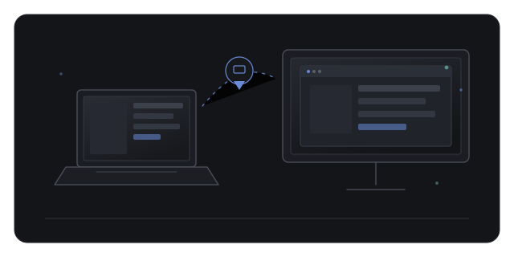

AirPlay 2 · recomendado
AirPlay con doubletake
Espejo del escritorio completo, con audio del sistema, hacia cualquier televisor o receptor compatible con AirPlay 2.
- Samsung, LG, Sony, Philips, TCL, Hisense, Vizio… con AirPlay 2
- Apple TV y cajas compatibles con AirPlay 2
- Modelos de 2019 en adelante (según marca y firmware)
- Receptores AirPlay 2, p. ej.
shairport-sync
7000/tcp · emparejamiento por PIN de 4 dígitos